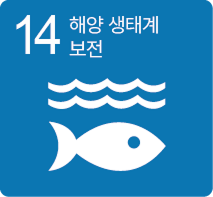
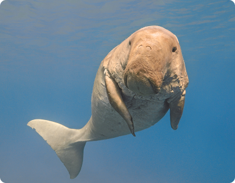

개념 학습
지속가능발전목표(SDGs) 관련 문제 탐색
생태계 보전 목표와 인공지능을 활용한 해결 방법
세계자연보전연맹(IUCN)이 멸종 위기 동물로 지정한 듀공을 추적하는 데 기계학습을 활용한 호주 머독 대학교 연구 팀 프로젝트를 살펴보자.

호주 머독 대학교 연구 팀 프로젝트
듀공의 움직임이 빨라 추적에 어려움을 겪던 중 호주 머독 대학교 연구 팀은 퀸즐랜드 대학교 연구 팀과 공동으로 기계학습을 활용하여 대양에서 듀공을 찾는 데 성공하였다. 연구진은 드론으로 찍은 바다 항공 사진을 구글의 인공지능 프로그램에 입력하고, 기계학습을 활용하여 듀공의 위치를 찾아낼 수 있었다.

듀공
바다소의 일종으로 채식을 하며 1900년대부터 개체 수가 줄어들어 세계 여러 나라에서 법으로 보호하고 있다.